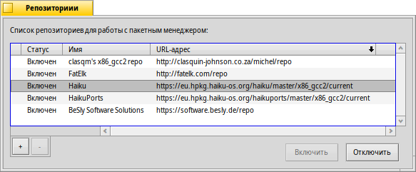

Русский
Русский Català
Català Deutsch
Deutsch English
English Español
Español Français
Français Italiano
Italiano Magyar
Magyar Polski
Polski Português
Português Português (Brazil)
Português (Brazil) Română
Română Slovenčina
Slovenčina Suomi
Suomi Svenska
Svenska 中文 ［中文］
中文 ［中文］ Українська
Українська 日本語
日本語 Репозитории
Репозитории
| Расположение в Deskbar: | ||
| Расположение в Tracker: | /boot/system/preferences/Repositories | |
| Настройки хранятся по адресу: | ~/config/settings/Repositories_settings |
Репозитории - это собрания пакетов программного обеспечения. По умолчанию настроены репозитории Haiku, содержащий все пакеты операционной системы, и HaikuPorts, предоставляющий доступ ко множеству собственных и портированных под Haiku приложений. Существует еще несколько репозиториев, которые курируются членами сообщества Haiku. Их можно найти в разделе Software Sites на сайте.
Это панель управления репозиториями (ее также можно открыть из меню приложения Склад):
Первая колонка в списке известных репозиториев показывает, включен ли репозиторий сейчас. Если репозиторий отключен, то он не будет опрашиваться приложением Склад и утилитой командной строки pkgman. Используйте кнопки и или двойной клик, чтобы изменить статус выбранного репозитория.
В зависимости от размера репозитория и скорости интернет-соединения, включение репозитория может занять несколько секунд. Если это займет больше времени, вы будете проинформированы о текущих задачах в маленьком текстовом поле над кнопками . В случае, если это займет необычайно много времени, вам будет предложено отменить или повторить операцию.
Чтобы вы могли полностью удалить репозиторий кнопкой "", он должен быть отключен.
Новый репозиторий можно добавть кнопкой "", которая откроет эту панель:
Чтобы добавить новый репозиторий, просто вставьте его URL в текстовое поле. Он будет подписан "Неизвестно", пока вы не включите его.